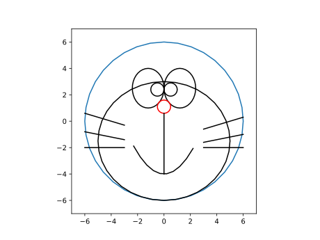
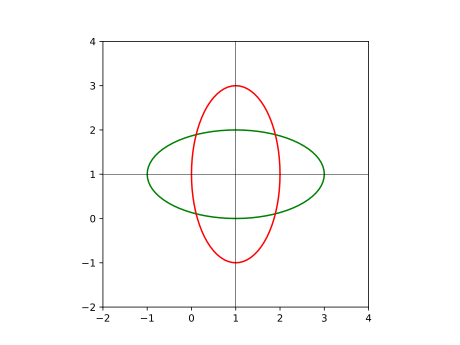
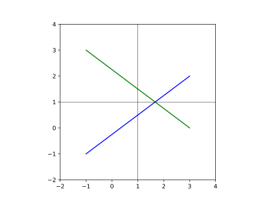
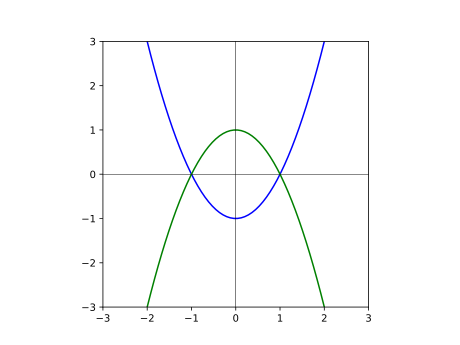
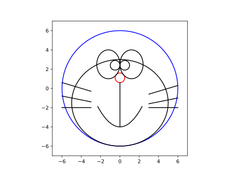

第15回：2018年度・定期レポートへのコメント（その２）
※ 以下のプログラムは、Julia 1.1向けに書き直した。
ネタもと
2018年12月、および、2019年1月の月間レポートでは、題材自由のレポートを課した。 うち、後者は、関数を定義することを必須の条件とした。
提出された学生レポートを少し改変して、以下に示す。
次の関数 dora1() は、何かを描く関数の定義である。
function dora1()
ts=0:pi/18:2pi
xs=6cos.(ts)
ys=6sin.(ts)
plt.plot(xs,ys)
ts=0:pi/18:2pi
xs=1.2 .+ 1.2*cos.(ts)
ys=2.5 .+ 1.5*sin.(ts)
plt.plot(xs,ys,"k")
ts=0:pi/18:2pi
xs=-1.2 .+ 1.2cos.(ts)
ys= 2.5 .+ 1.5sin.(ts)
plt.plot(xs,ys,"k")
ts=0:pi/18:2pi
xs= 0.5cos.(ts)
ys=1.1 .+ 0.5sin.(ts)
plt.plot(xs,ys,"r")
ts=0:pi/18:2pi
xs= 5cos.(ts)
ys=-1.5 .+ 4.5sin.(ts)
plt.plot(xs,ys,"k")
ts=0:pi/18:2pi
xs=0.5 .+ 0.5cos.(ts)
ys=2.4 .+ 0.5sin.(ts)
plt.plot(xs,ys,"k")
ts=0:pi/18:2pi
xs=-0.5 .+ 0.5cos.(ts)
ys= 2.4 .+ 0.5sin.(ts)
plt.plot(xs,ys,"k")
xs=-2.3:0.5:2.3
plt.plot(xs, 1/2.5*xs.^2 .-4 , "k", label="s")
xs=-2:0.1:1
plt.plot(-4 .+ xs,-0.3*xs,"k")
plt.plot( 5 .+ xs, 0.3*xs,"k")
xs=-2:0.1:1
plt.plot(-4 .+xs,-2 .+0*xs,"k")
plt.plot( 5 .+xs,-2 .+0*xs,"k")
xs=-2:0.1:1
plt.plot(-4 .+ xs,-1.2 .+ -0.2*xs,"k")
plt.plot( 5 .+ xs,-1.2 .+ 0.2*xs,"k")
xs=-28:0.1:-5
plt.plot(0*xs,-5 .+ -0.2*xs,"k")
enddora1 (generic function with 1 method)この関数を呼出して、実行結果を示す。 何かのキャラクターの顔が描かれた。
using PyPlot
plt.axes().set_aspect("equal")
dora1()
plt.xlim(-7,7)
plt.ylim(-7,7)
この関数では、平面図形を描く曲線を各々設計した苦労の跡が偲ばれる。 作者の意図通りに動作し、大変結構である。
しかし、この関数を後から振り返ったときに、 各行の意図をすぐに汲み取るのは難しいだろう。 一部の数値だけ異なるが、同じようなプログラム片が並ぶのも、読みにくくしている。
下請け関数を定義する
さて、この顔は、楕円、直線、放物線の３つの図形から成り立っている。 これら３つの図形を描く関数を定義してみよう。
まず、$\left(x_c, y_c\right)$ を中心とし、$x$ 軸方向の広がりが $2a$、 $y$ 軸方向の広がりが $2b$ であるような楕円を描く関数を定義する。式で書くと $\left(\dfrac{x-x_{c}}{a}\right)^2 + \left(\dfrac{y-y_{c}}{b}\right)^2 = 1$ である。
関数の引数は、xc, yc, a, b と 色(またはスタイル)を示す文字列 c である。 最後の引数 c を省略したときは c="k" (黒色) を既定値とする。
function draw_ellipse(xc,yc,a,b,c="k")
ts=0:pi/36:2pi
xs=xc .+ a*cos.(ts)
ys=yc .+ b*sin.(ts)
plt.plot(xs,ys,c)
enddraw_ellipse (generic function with 2 methods)上の関数の動作を確認しよう。
plt.axes().set_aspect("equal")
draw_ellipse(1,1,2,1,"g")
draw_ellipse(1,1,1,2,"r")
plt.xlim(-2,4)
plt.ylim(-2,4)
plt.axhline(1, color="k", lw=0.5)
plt.axvline(1, color="k", lw=0.5)
次に、２つの点 $(x_1, y_1)$ と $(x_2, y_2)$ とを結ぶ直線を描く関数を定義しよう。
function draw_line(x1,y1,x2,y2,c="k")
xs=[x1,x2]
ys=[y1,y2]
plt.plot(xs,ys,c)
enddraw_line (generic function with 2 methods)上の関数の動作を確認しよう。
plt.axes().set_aspect("equal")
draw_line(-1,-1,3,2, "b")
draw_line(-1, 3,3,0, "g")
plt.xlim(-2,4)
plt.ylim(-2,4)
plt.axhline(1, color="k", lw=0.5)
plt.axvline(1, color="k", lw=0.5)
最後に、 放物線 (2次関数) $y=ax^2+bx+c$ を、区間 $\left[x_1, x_2\right]$ の範囲で描く関数を定義しよう。
function draw_para(a,b,c, x1,x2, color="k")
xs=range(x1,x2,length=50)
ys=a*xs.^2 .+ b*xs .+ c
plt.plot(xs, ys, color)
enddraw_para (generic function with 2 methods)上の関数の動作を確認しよう。
plt.axes().set_aspect("equal")
draw_para( 1, 0,-1, -2,2, "b")
draw_para(-1, 0, 1, -2,2, "g")
plt.xlim(-3,3)
plt.ylim(-3,3)
plt.axhline(0, color="k", lw=0.5)
plt.axvline(0, color="k", lw=0.5)
元の関数を書き換える
これらの「下請け」関数を呼び出す形で、元の関数 dora1() を書き直そう。 隣接する部分がまとまるように、行の順番を少し入れ替えて、コメントをつけた ( 元の描画順に意図があるなら、ご容赦願いたい )。
function dora2()
# face
draw_ellipse(0,0,6,6,"b")
# nose
draw_ellipse(0,1.1, 0.5, 0.5, "r" )
# gray line
draw_ellipse(0,-1.5, 5, 4.5 )
# eyes
draw_ellipse( 1.2,2.5, 1.2, 1.5 )
draw_ellipse(-1.2,2.5, 1.2, 1.5 )
draw_ellipse( 0.5,2.4, 0.5, 0.5 )
draw_ellipse(-0.5,2.4, 0.5, 0.5 )
# beard
draw_line(-6, 0.6, -3,-0.3 )
draw_line( 6, 0.3, 3,-0.6 )
draw_line(-6,-2,-3, -2 )
draw_line( 6,-2, 3, -2 )
draw_line(-6, -0.8, -3, -1.4 )
draw_line( 6, -1.0, 3, -1.6 )
# mouth
draw_line( 0, 0.6, 0, -4 )
draw_para(1/2.5, 0, -4, -2.3, 2.3 )
enddora2 (generic function with 1 method)実行してみよう。
using PyPlot
plt.axes().set_aspect("equal")
dora2()
plt.xlim(-7,7)
plt.ylim(-7,7)
リファクタリング
関数 dora1() を dora2() に書き直したように、 プログラムの内容を保ったまま、見通しをよくしたり、実行速度を改善する作業を、 リファクタリング (refactoring) という。
(プログラムも含めて)複数の要素 (component )が協力して働いて、 ある目的を達成するものを、システム (system)という。
システムを実装する (implement) 手法として、 ボトム・アップ的な手法 (bottom-up approach) 、 トップ・ダウン的な手法 (top-down approach) が知られている。
ボトム・アップ的な手法は、 下位の要素を作成してから (上の例では、関数 draw_ellipse や draw_line などを定義してから)、 それらの組合せで上位の要素 (システム)を作成する (上の例では関数 dora2() を定義する) 手法である。
トップ・ダウン的な手法は、 先に、上位の要素 (システム) を作成してから (関数 dora2() を定義してから)、 その下位の要素 (部品) を作成する (関数 draw_ellipse などを定義する) 手法である。
プログラミングの初級段階では、ボトム・アップ的な手法が分かりやすいだろうが、 システムの成り立ちに習熟するにつれて、 トップ・ダウン的な手法が取れるようになるであろう。
システムの考え方では、 システムを構成する「要素」を、入力と出力の対応関係だけが決まっていて、 その中身は関知しない「ブラック・ボックス black box」とみなす。 しかしながら、現実のシステムでは、「要素」の「中身」を無視することができず、 上位のシステムの性能にも影響が及ぶ。
そのような「要素」と「要素」の界面 (interface) を上手に扱うことができる人こそ、 優れた工学者 (engineer) といえる。
諸君が優れた工学者になることを願って、この文の著者は対応しているつもりである。